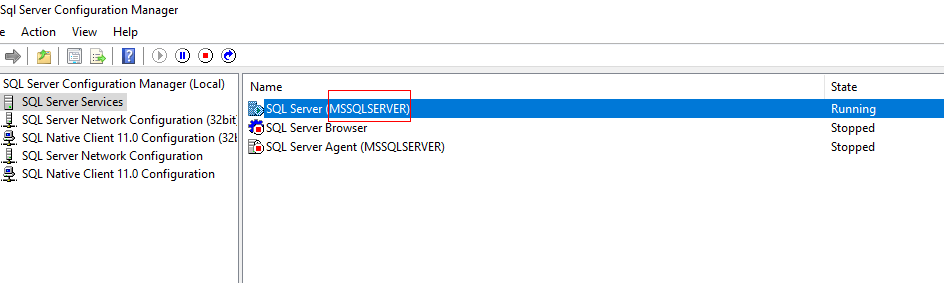

Step 1: Checking and Configuring the Database Environment
Procedure
- Log in to the SQL Server database host. Windows 2019 and SQL Server 2019 are used as examples.
- Go to the Sql Server Configuration Manager page.
- Check whether the status of the SQL Server (MSSQLSERVER) service is Running. MSSQLSERVER is the instance name. If the instance service is in the Stopped state, contact the administrator to start it before executing backup.
